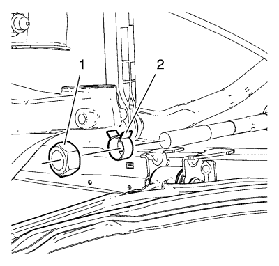
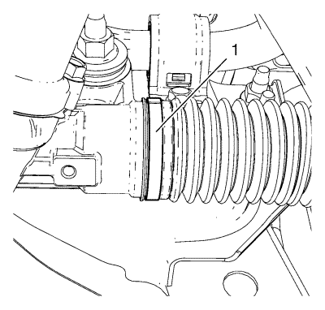
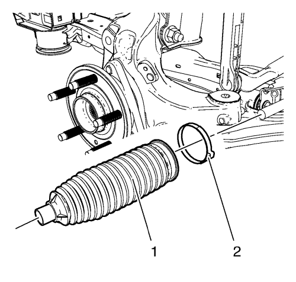

Sustitución del fuelle del mecanismo de la dirección
Herramientas especiales
CH-804 Tenazas de abrazadera de la junta del árbol de accionamiento
Si desea informarse sobre herramientas regionales equivalentes, consultar Herramientas especiales .
Procedimiento de desmontaje

- Retire la barra de acoplamiento de unión a la dirección. Consultar Sustitución la barra de acoplamiento exterior del varillaje de la dirección .
- Desmonte la tuerca de la barra de acoplamiento interior del varillaje de la dirección (1).
- Desmonte la abrazadera del fuelle exterior del mecanismo de la dirección (2).

- Afloje la abrazadera del fuelle interior del mecanismo de la dirección (1).

Nota: Una vez retirado el fuelle, revise la barra interior del varillaje de dirección en busca de signos de corrosión o suciedad. Si no se detecta nada evidente, prosiga con la reparación. Si hay corrosión o suciedad evidente, sustituya la barra interior.
- Retire el fuelle del mecanismo de la dirección (1).
- Desmonte la abrazadera del fuelle interior del mecanismo de la dirección (2).
Procedimiento de montaje
- Monte una nueva abrazadera (2) sin apretar en la parte interior del fuelle del mecanismo de la dirección.
- Aplique grasa del juego de servicio en los puntos indicados.
Nota: El fuelle del mecanismo de la dirección debe asentarse en la ranura correspondiente del mecanismo de la dirección.
- Monte el fuelle del mecanismo de la dirección (1) sobre la barra interior del varillaje de la dirección y en el mecanismo de la dirección.
- Utilizando las tenazas CH-804 rebordee la abrazadera del fuelle del mecanismo de la dirección interior (1).
- Monte la abrazadera del fuelle exterior del mecanismo de la dirección (2).
- Monte la tuerca de la barra de acoplamiento interior del varillaje de la dirección (1).
- Monte la barra de acoplamiento de unión a la dirección. Consultar Sustitución la barra de acoplamiento exterior del varillaje de la dirección .
| © Copyright Chevrolet Europe. All rights reserved |